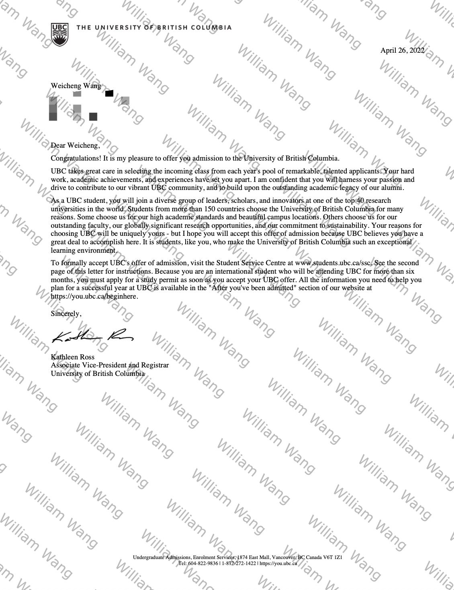
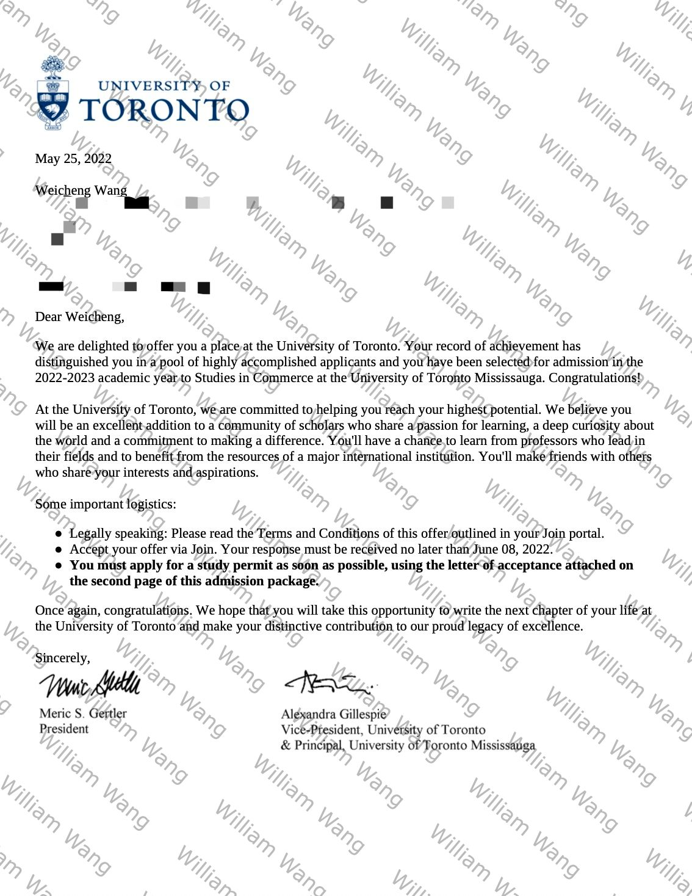
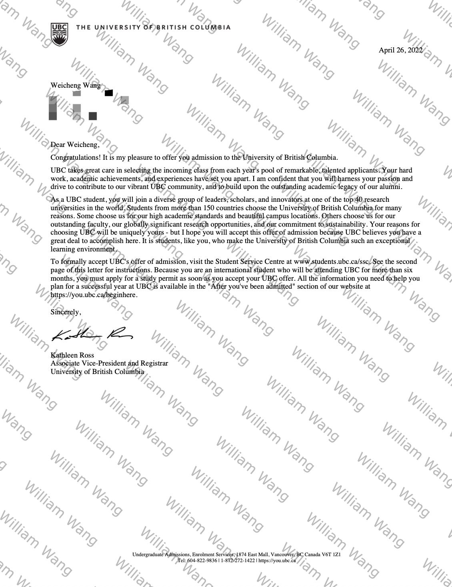
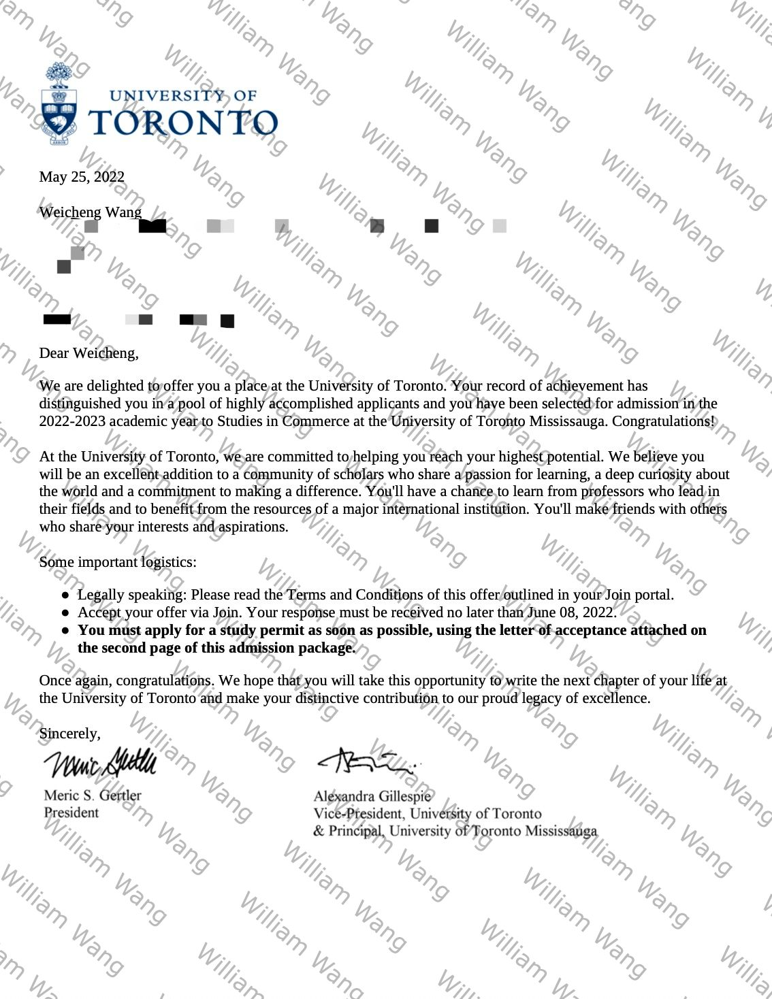
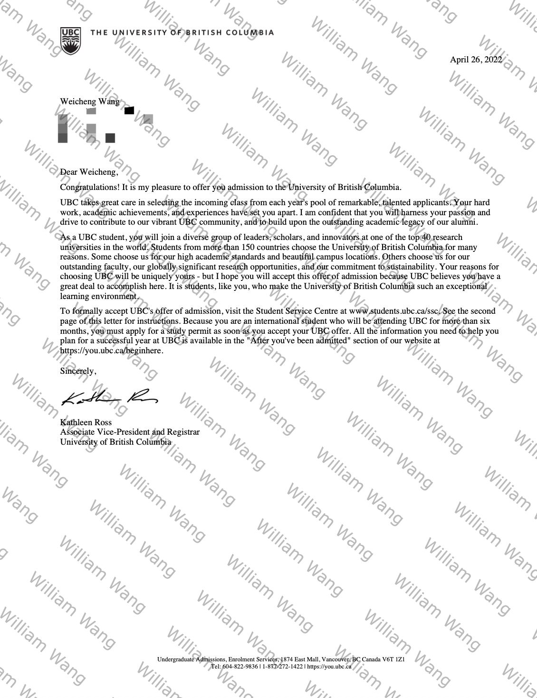
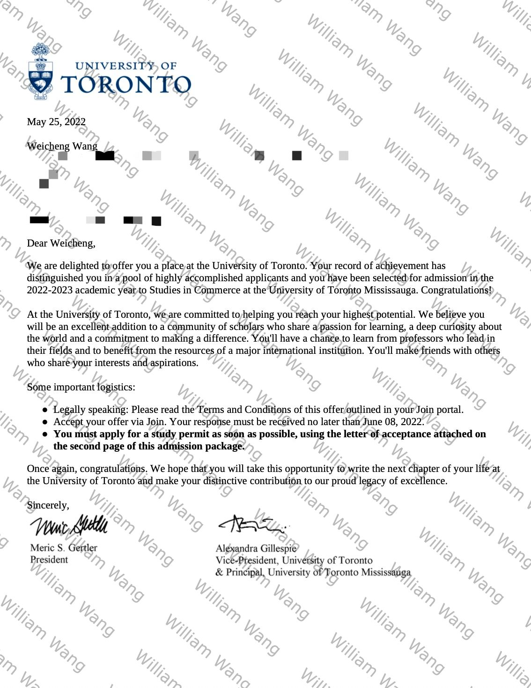

Offer Gallery
Below are a few real admission offers received. Sensitive details have been redacted for privacy.


 





Guiding undergraduate & graduate students pursuing international education.
We offer end-to-end guidance for international students seeking both undergraduate and graduate admissions. All services are customized based on your academic profile, interests, and long-term goals.
William has secured admissions for himself and others to:
📠Undergraduate: UC San Diego, UC Davis, Ohio State, Northeastern, UBC, U of Toronto
📠Graduate: Harvard Medical School, Duke (Fuqua), Columbia, USC, UCSD (with $30,000 merit scholarship)
Below are a few real admission offers received. Sensitive details have been redacted for privacy.

